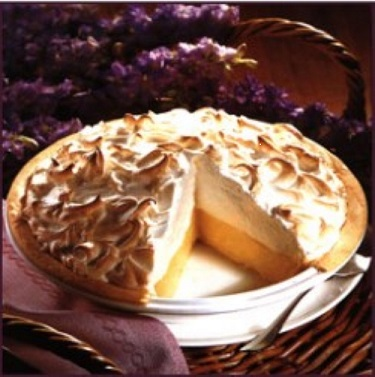

Grandma's Lemon Meringue Pie

One 9-inch pie
30 Min - Prep time
10 Min -Cook time
40 Min - Total
8 Servings
INGREDIENTS
1 cup white sugar
2 tbsp all-purpose flour
3 tbsp cornstarch
1/4 tsp salt
11/2 cups water
2 lemons, juiced and zested
2 tbsp butter
4 egg yolks, beaten
1 (9 inch) pie crust, baked
4 egg whites
6 tbsp white sugar
DIRECTIONS
- Preheat Oven:Preheat oven to 350 degrees F(175 degrees C).
- Make Lemon Filling: In a mefium saucepan ...
- Whisk together 1 cup sugar,flour, cornstarch,and salt.
- Stir in water, lemon juice and lemon zest.
- Cook over medium-high heat, stirring frequently, unit mixture comes to a boil.
- Stir in butter
- Place egg yolks in a small bowl and gradully whisk in 1/2 cup of hot sugar mixture.
- Bring to a boil and continue to cook while stirring constantly until thick.
- Remove from heat.
- Pour Filling into baked pastry shell.
- Make Meringue: In a large glass or metal bowl...
- Whip egg whites until foamy
- Add sugar gradually, and continue to whip unil stiff peaks form.
- Spread meringue over pie, sealing the edges at the crust.
- Bake:Baake in preheated oven for 10 minutes, or until meringue is golden brown.
This is our favorite recipe here at Granny's Pies. It has been enjoyed by pie fans for many years. It's Granny's favorite! We hope you'll find that this recipe is delicious and also easy to follow; it's a piece of eake pie!